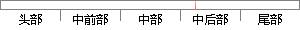

采用了意法半导体的NVM工艺和ART加速器，
片段位置图

相似结果
相似片段：
446 STM32F427/437 STM32F429/439 STM32F469/479 STM32F4 相关设计文件 参考设计 带有DSP和FPU指令的STM32F4系列高性能微控制器 基于ARM® Cortex®-M4的STM32F4系列单片机 (MCU) 采用了意法半导体的NVM工艺和ART加速器™，在180 MHz的工作频率下通过闪存执行指令时可实现225 DMIPS/608 CoreMark的性能，是迄今所有基于Cortex-M内核的微控制器产品所达到的最高性能得分。 由
| 对比库： | WriteCheck云资源库 |
| 来源： | stmcu.com.cn 查看来源 |
| 发布时间： | 2017-01-10 |
| 相似率 | 62.5% （轻度抄袭） |